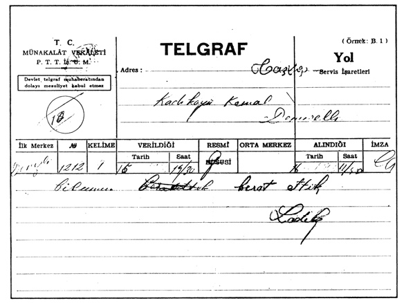

TAKDİM
Plevne Müdâfaası, Osmanlı cihan devletini tarih sahnesinden silmek isteyenlere karşı verilen büyük bir mücadelenin destanıdır. Bu destan, tarihimizde “93 Harbi” olarak anılan 1876-1877 Osmanlı-Rus Savaşı’nın en önemli ve kanlı sayfalarından birini teşkil eder. Bu inanılmaz müdafaada Plevne Kahramanı Gazi Osman Paşa’ya canla başla yardım edenlerin arasında Taşköprülü Sâdık Paşa gibi bir bahadır da vardır.
Tarihimizdeki eşsiz şeref levhalarından birisi olan bu hâdiseden yaklaşık 60-70 yıl sonra Plevne Gazisi Sâdık Paşa’nın torunu Sâdık Paşazâde Sâdık Demirelli’yi asil vatan burçlarından Kastamonu’da ikamet ederken görüyoruz.
Sâdık Bey, zümrüt renkli Ilgaz Dağları’nın eteklerinde nam salmış itibarlı bir kişidir. Bütün Kastamonu, Sinop, Tosya, Çankırı, Düzce ve Adapazarı, ayağında çizmesi, belinde silâhları ve altındaki ak küheylanıyla onu konuşmaktadır. Havalinin bütün düğünlerinin, merasimlerinin en itibarlı misafiri odur.
Gönlünde kötülük, nefret, kıskançlık gibi marazı duygular taşımayan Sâdık Bey’in, ak küheylanıyla Kastamonu-Sinop arasını âdeta rüzgâr misali geçtiği halk arasında dilden dile dolaşmaktadır.

Sâdık Bey’in dedesi Plevne kahramanlarından Sâdık Paşa

Sâdık Bey’in babası
Binbaşı Mehmed Ali Bey
(1813-1893)
Hülâsa; cömertliği, yardımseverliği, gönül zenginliği, ciddiyet, vakar ve asaletiyle Paşazâde Sâdık Demirelli gerçek bir “bey”dir.
Memleketin mânevî dünyasında hazan rüzgârlarının estiği 1936’lı yılların güzel bir bahar ayında, Taşköprülü Sâdık Beyin beldesi Kastamonu’ya garip bir zât getirirler.
Süngülü jandarmaların nezaretinde Çarşı Polis Karako-lu’na yerleştirilen bu zâtın resmî kayıtlardaki nâmı, “Şark menfîlerinden” diye geçmektedir. Hâlbuki tam tersine bu garip zât, gönüllerde iman nurunu yeniden inşa etmekle vazifeli bir muhabbet mimarı; kendisine bu ismi verenler de “mâneviyattan sürgün edilmiş, sevgi mahrumu talihsizler”di. O muhabbet fedaisi zât, bileklerine vurulan kelepçelere bile “Bunda da bir sanat var.” diyerek tebessümle bakan bir enginliğe sahipti. Kendisine –hâşâ!– bir cani gibi davranarak memleket memleket sürgüne gönderenlerin hidayetleri için daima dua ederdi. Ve neticede bir türlü kelepçeleyemedikleri gönlünden çıkan her kelime, insanları dalga dalga kendi nurânî dairesine cezbediyordu.
Nitekim bütün aksi propagandalara rağmen, her yerde olduğu gibi saf ve temiz müminler hâlesi burada da etrafını sarar. “Zamanın Bedî’si” aziz Üstad’ın müjdelediği hakikatler yaralı yüreklere baharı getirir. Anadolu’nun bu mübarek beldesinin kadirşinas insanları, mayalarında bulunan aslî duyguları âdeta yeniden keşfederler.
Bediüzzaman Hazretleri’ni görüp tanıdıktan sonra gönlü gülistana dönenlerden birisi de, Kastamonu ahâlisinin sevilen kişilerinden Şeyhlerin torunu Hilmi Bey’dir. Günün birinde Hilmi Bey, yakın dostu, vakar ve asalet timsali Sâdık Bey’i tutar, Nur Sultan’ın huzuruna getirir.
Ilgaz Dağları’nın bu nâmlı yiğidi, kendi gönül dünyasının, “asr-ı saadet müslümanı” tarafından damla damla fethedilişine şahit olur. Hiç itirazsız önünde diz çöküp boyun büker. “Kapında kul var sultandan içerü!” diyen Yunus misâli “Senin kapındaki kullar, sultandan da değerli” diyerek Nurlar’ın hizmetine girer. Aziz Mahmud Hüdayî’nin şu sözleri sanki Sâdık Bey için yazılmıştır:
“Bir padişaha kul o kim,
Mülkü zâil olmaz ola.
Bir gülşende bülbül ol kim,
Hiç sararıp solmaz ola.”

Sâdık Bey, Sinop, Tosya, Kastamonu, Çankırı,
Düzce ve Adapazarı havalisinin ün yapmış efesiydi.
Plevne Gazisi Sâdık Paşa’nın torunu, Binbaşı Mehmet Ali Bey’in oğlu Paşazâde Sâdık Bey’e de ancak böylesi bir sultana boyun eğmek yaraşırdı.
Kastamonu’da uhuvvet ve muhabbeti perçinleyici derslerin refakatinde yıllar birbirini kovalar. Nihayet Hz. Üstad’ı, bir mücrim gibi zindan zindan dolaştıran talihsizler, yeniden harekete geçerler.
İdam mahkûmu nazarıyla muamele gören mahkûmların yeni sürgün yeri Denizli Hapishânesi’dir. Bu defaki sürgün kafilesinin içinde artık Taşköprülü Sâdık Bey de vardır.
Dünyevî endişe ve sıkıntıların koparamayacağı bir bağlılıkla üstadına bağlanan vefa ve sadakat âbidesi Sâdık Bey, burada da hizmetine devam eder. Hapishânede kaldığı müddetçe, üstadı için kendi elleriyle çorba pişirip, yemek yapar. Hiç kimsenin minneti altına girmeyen ve hiç kimseden bir şey kabul etmeyen Bediüzzaman Hazretleri, Sâdık Bey’i kırmaz. Onun hazırladığı çorbaları memnuniyetle içer ve aylarca bu asil ruhlu, ihlâslı talebesinin pişirdiği yemeklerle sofrası şenlenir.
Harbiye’de tahsil gören ve çok güzel bir yazıya sahip olan Sâdık Bey, bu güzel hattıyla Nur Risaleleri’nin neşrinde de vazife alır. Hapishânenin ağırcezalı mahkûmları olan Dursun Atmaca, Süleyman Hünkâr ve Mümtaz Acar’dan müteşekkil gönüllü bir hizmet ekibi kurar.
Ayrı bir koğuşta tek başına tecride mahkûm edilen asrın büyük mütefekkiri Bediüzzaman Hazretleri, yazdığı mektupları, pusulaları ve Meyve Risalesi’nin parçalarını kibrit kutularının içinde, hapishâne meydancısı Arnavut Âdem Ağa’ya vermekte, o da bu mektupları Taşköprülü Sâdık Bey’e ulaştırmaktadır. Sâdık Bey ve ekibi ise bunları sabahlara kadar hiç uyumayarak çoğaltmaktadırlar.
Çoğaltılan bu parçalardan bazı nüshalar Ankara’ya Cumhurbaşkanlığı makamına, Adalet Bakanlığı’na, TBMM Başkanlığı’na ve Diyanet İşleri Bakanlığı’na postalanmaktadır. Meyve Risalesi, Denizli Hapishânesi’ndeki bu gayret ve fedakârlığın bir semeresidir.
Nur talebeleri, hapishânede bulundukları bu zaman zarfında, hiçbir zaman mahkûmiyetin getirdiği bir fütur ve endişe hâline düşmezler. Kendileri hapishânede olmalarına rağmen dışarıda bulunan yakınlarına sabır, teselli ve metanet dolu mektuplar yazarlar. Nitekim bu metaneti Sâdık Bey’in, annesi Necmiye Hanım’a yazdığı şu mektupta görmek mümkündür:
“Çok şefkatli anneciğim,
Şu satırları size bir teselli olarak yazıyorum. Çok ciddi bir hakikatten bahsediyorum.
Cenâb-ı Hakk’ın celâli tecelli ediyor. Rubûbiyetinde abesiyet olmadığı içindir ki, rahmet-i ilâhiye celâl sıfatına müsaade ediyor. O Kadîr-i Mutlak, en büyük nimetlerini felaket ve musibet perdesi altında veriyor. Ne mutlu o insanlara ki, imanın büyük bir rüknü olan “Ve bilkaderi hayrihî ve şerrihî minallâhi teâlâ” sırrını yalnız lisanıyla değil, teslim ve rızasıyla göstersin. Yine ne mutlu insana ki, böyle bir büyük imtihana müyesser oluyor. Ve bir velinin yetmiş senede kazanabileceği “rıza” makamını, bir günde, hatta bir dakikada kazanmak fırsatına nâil oluyor. Mal, mülk, evlâd ü iyal vazife-i zâhiriye değil midir?
Maddî zararlarımızın telâfisi bir ömre mütevakkıf.. hâlbuki o ömrü getirmek muhal... Mazinin âlâmı, istikbalin endişesiyle muzdarip olarak, telafisi mümkün olmayan zarar-ı maddînin yanına mânevî fırsatı katmak ne büyük kayıptır. Cenâb-ı Hak cümlemizi böyle bir kayıptan rahmetiyle muhafaza buyursun. Ve o dakikadan istifadeyi müyesser kılsın, âmin.”
Bediüzzaman ve Nur talebeleri, Denizli Hapishânesi’nde iken ülkenin muhtelif yerlerinde, özellikle de Kastamonu ve civarında sürekli depremler olmaktadır. Sâdık Bey, annesine yazdığı bir mektubunda da, bu felaketten dolayı annesini teselli etmektedir:
“Anneciğim,
Cenâb-ı Risaletpenâh (aleyhissalâtü vesselâm) Rabbinin huzuruna dünya malıyla gitmemek için son saatlerinde gelen yedi altını tasadduk buyurmadılar mı?
Âlâ-yı illiyyîn’e çıkan ve beşeriyetin bir hülâsası olan öyle ekmel bir zâtı taklit etmek, bizim gibi zayıf insanların kârı değilken, musibet perdesiyle örtülü ve kısa bir zamanda taklit imkânının bizlere verilmesi, lütuf ve nimet-i ilâhiye değil de nedir?
Böyle bir fırsatı kaçırmak maddî zararımızdan milyarlar büyük bir zarar-ı mânevî değil midir?
Demek yekdiğerimizi taziye ve geçmiş olsun değil; tebrik etmeliyiz. Keza habersiz ve tehaffuz imkânı olmadığı için ölenler şehid-i mânevî; zâyi’ olan mal, bir sadaka-i azîmdir. Keffâreti ve ecr-i mânevîsi çok büyüktür. Bu hususta müteaddit hadis-i kudsiler vardır. Cenâb-ı Hak cümlemizi rıza-yı hakikî ile karşılamak nasip buyursun, âmin.”
Plevne Kahramanı Sâdık Paşa’nın gelini Necmiye Hanım, 19 Ocak 1943 tarihinde oğlu Sâdık Bey’e cevabî bir mektup yazar. Necmiye Hanım, her kelimesine anne şefkatinin sindiği bu mektubunda, oğlunun sıhhatte olmasından dolayı duyduğu memnuniyeti belirtmekte ve şöyle demektedir:
“Burada her gün hareket-i arz (yer sarsıntısı) devam ediyor. Hasretle gözlerinden öperim. Gece gündüz duacıyım oğlum.”
Nur talebelerinin Denizli Hapsi, bazıları için az eksik bazıları için de az fazlasıyla tam dokuz ay sürer. Tamamen haksızca olan bu uygulama da, böylece Muğlalı hakim Ali Rıza Bey’in beraat ve tahliye kararıyla son bulur. Hasiphaneye yetmiş üç kişi olarak giren Nur talebeleri, buradan yetmiş bir kişi olarak çıkarlar. Zira iki Nur şâkirdi Denizli Medrese-i Yusufiyesinde âhirete göçmüştür. Sâdık Bey için ise bu süre, âdeta anne sinesindeki kadar sıcak ve Nur dâvâsına hizmette tatlı hatıralarla doludur.

Taşköprülü Sâdık Bey’in, 15 Haziran 1944 Perşembe günü saat: 14:30’da kardeşi Kemal Demirelli’ye çektiği, Denizli mahkemesinin tahliye ve beraat kararını bildiren telgrafı...
Denizli maznunları, bu tahliye kararıyla birlikte memleketlerine doğru yola çıkarken, Sâdık Bey de Taşköprü’ye döner. Aklı, Denizli Hapishânesi’nde bıraktığı mübarek Üstadının yanında, gönlü, bitmez bir hasretin ateşiyle yanmaktadır. İçindeki sönmek bilmeyen hasret korunu şiirleriyle dindirmeye çalışırken, Üstadına olan yakın alâkasını da dindirmeye çalışırken, Üstadına olan yakın alâkasını da yazdığı mektuplarla devam ettirir.
Denizli’den Taşköprülü Sâdık Bey’e 17 Temmuz 1944 tarihinde “Kastamonulu İhsan” imzasıyla gönderilen bir mektupda “Seyda” hakkında şu bilgiler verilmektedir.
“Aziz Kardeşim Sâdık Bey,
“Efendi buradadır. Şehir Oteli’nde ikamet ediyorlar. Siz gittikten sonra üç defa ziyaretime gelmek büyüklük ve tevazuunu izhar buyurdular. İki defa da adam göndermek suretiyle hatırlarımızı tatyip eylediler. Rahat ve sıhhatleri mükemmeldir.
“Bazı arkadaşlardan mektup alıyorum. Bilhassa Milaslı Halil İbrahim ve Ahmet Feyzi Efendiler muntazaman gönderiyorlar.”
Denizli Tüccarı Hafız Mustafa Kocayaka, sevgili dostu ve muhterem kardeşi Sâdık Bey’e 31 Temmuz 1944 tarihini taşıyan mektubunda şunları yazmaktadır:
“Sevgili ve muhterem Sâdık Bey kardeşimize,
“25 Temmuz 1944 tarihli mektubunuzu aldım. Üstadımız Efendimiz Hazretlerine ait olan kısmını takdim ettim. Pirinci de aldım. Merak etmeyiniz. Sıhhati ve afiyeti yerindedir. Yapılması lazım gelen hürmeti halk yaptı. Çok memnun ve mesrur olarak bugün Afyon vilayetine ikamete memur olarak gönderildi. Kendileri memnundur. Hükümet büyük iltifat gösterdi. 400 lira harcırah gönderdi. Bir komiserin refakatinde hareket etti. İki defa hapishâneye, bir defa da kabristanda Hafız Ali Efendi merhumun kabrini ziyarete gitti.”

“Denizli Tüccarı” Hafız Mustafa Kocayaka’nın kendi el yazısıyla
Sâdık Bey’e gönderdiği mektup.
Mektubun devamında, gönderilen Kastamonu pirincinin, Bediüzzaman Hazretleri’ne ulaştığı, Hazret’e ait mahkeme evrakının savcılık tarafından usulen temyize gönderildiği ve yüzde yüz tasdik edileceği yazılmakta, sonlara doğru da Kastamonu’da olan depremden dolayı Sâdık Bey teselli edilmektedir:
“Zelzele felaketinden mutazarrır olduğunuza müteessirim. Cenâb-ı Hak başka yönden zararımızı telafi buyursun. Felaketiniz geçmiş olsun. Mü’minler, Müslümanlar yek diğerinin kardeşi olduğunu Cenâb-ı Hak Kur’ân-ı Kerîm’inde sarâhatle haber veriyor. Sizlere zaman icabı bir şey yapamadık. Af buyurunuz. Mukabil duanızı bekler, ihvanın arz-ı hürmet eylediğini tebliğ ederek, sana selâm ve saygılarımı sunar, efrad-ı ailenizin ve bütün âlem-i İslâm’ın refah ve saadetini Cenâb-ı Kibriyâ’dan dilerim, iki gözüm, sevgili kardeşim.”
Hafız Mustafa’nın mektubuyla birlikte Taşköprü’ye bir mektup daha gelir. “Sîn, Ayn, Nûn” diye imzalanan bu mektup, büyük insan, Nur Üstad’a aittir. Bediüzzaman, kendi “dest-i hattıyla”, kendi mübarek kalemiyle yazdığı bu mektubunda; Denizli Hapishânesi’nde dokuz ay kendisine çorba pişiren vefakâr talebesi Sâdık Bey’e Denizli’den ayrılış anını anlatmaktadır.
Bu mektubun yazılışından bir gün sonra Bediüzzaman Hazretleri önce Afyon’a, oradan da Emirdağ’a nefyedilir.
* * *
Aradan dört yıl gibi bir zaman geçer. Taşköprülü Paşazade Sâdık Bey, Taşköprü’de Nur Risaleleri’ni okumakta, yazmakta, gönülleri Kur’ân nurlarıyla aydınlatarak hizmetine devam etmektedir. Öte yandan üstadına olan firkatini, hasretini yazdığı manzumelerle dindirmeye çalışmaktadır:
İsmi Said, kendi saîd, hâli sâd,
İnsan; bunun sultânına bîatla olur muvahhid.
Hem etmektir muradı din ve imanı âbâd,
Baş üzre deyüp eyle her emrine inkıyad.
Nur yolunun kara sevdalısı bu aziz insan, nihayet firkatin ateşinde daha fazla yanmaya dayanamayacağını anlayınca Emirdağ’a doğru yola çıkar. Emirdağ yolunda Ankara’ya uğrayan Sâdık Bey, bu esnada bir otelde, tevâfuken orada bulunan Nur dâvâsına büyük hizmetleri geçen Fakazlı ailesinden İnebolulu İsmail Fakazlı ile karşılaşır. Sâdık Bey, dâvâ arkadaşı İsmail Fakazlı’ya, Üstad’ı ziyaret etmek için yola çıktığını söyler. İsmail Fakazlı da bu ziyarete iştirak etmek isteyince beraberce vuslata doğru Emirdağ yolunu tutarlar.
Bu sıralarda Emirdağ’daki küçük mütevazi bir hanede farklı bir hava yaşanmaktadır. Ortalık toplanmış zaten temiz olan şilteler tekrar yıkanmıştır. Mütevazi hanenin mübarek sakini Bediüzzaman Hazretleri, gözleri ve gönlü yolda misafir beklemektedir.
Ertesi gün Eskişehir’e ulaşıp geceyi buradaki Yıldız Otelinde geçiren iki gönül dostu daha ertesi gün gecenin geç saatlerinde Emirdağ’a ulaşırlar. Bir türlü bitmeyen bir gecenin ardından günün ilk ışıklarıyla beraber, Nur Üstad’ın huzurlarıyla müşerref olmak için soluk soluğa bir heyecanla, mütevazi hanenin kapısını çalarlar. Uzun boylu, kafkas çehreli, kalın ve gür bıyıklı, temiz bir genç kapıyı açar. Misafirleri içeri alır. Sâdık Bey, merdivenleri çıkarken heyecandan kalbi duracak gibidir. Tahta kapıyı yavaşça açar, içeri girer. Yılların hasretinin içine sindiği bir ses tonuyla tek cümlede boşalır: “Esselâmü aleyküm Üstadım!”

Sâdık Bey’in güzel hattıyla yazdığı, Sözler kitabındaki
17. Söz’den bir sayfa.
Sayfanın sağ alt köşesinde, Bediüzzaman’ın bir hâşiyesindeşunları okumaktayız:
Bu Fârisî beyitler yirmi iki sene evvel Ankara’da kalbime geldi. O vakit Afgan Sefiri bu beyitleri benden istedi...
Kısacık bir sessizlikten sonra fazla dayanamayan Sâdık Bey, kendini Nur Sultan’ın önüne atıp ayaklarına kapanır. Paşazâde Sâdık Bey küçük bir çocuk gibi sarsılarak hüngür hüngür ağlamaktadır. Üstad Hazretleri, bu vefakâr talebesini şefkatle, “Kalk kardeşim Sâdık Bey!” diyerek omuzlarından tutup kaldırırken, gözlerinden dökülen yaşlar, mübarek yüzünü ıslatmaktadır. Orada bulunan herkes bu manzara karşısında duygulanmış, mütevazi hâneyi tatlı bir vuslat havası sarmıştır.
Üstadına ve dâvâsına bütün zerreleriyle tam bir teslimiyet içinde bağlanan, Plevne kahramanlarından Sâdık Paşa’nın torunu, Binbaşı Mehmet Ali Bey (1873-1930) ile Necmiye Hanım’ın evliliğinden dünyaya gelen Taşköprülü Sâdık Bey, bu buluşmadan yıllar sonra, 1902’de başladığı dünya hayatını 1971 baharında noktalar. Geride bereketli bir ömür ve hayırla yâd edilecek sayısız hizmetler bırakarak...
Onun bu hizmetlerini daima takdir eden Bediüzzaman Hazretleri, Emirdağ Lâhikası isimli eserinde şöyle demektedir:
“Hapishânede, hakikaten şahsıma ve Nurcuların ittihadına ve mahpusların Nurcularla tevafukuna unutulmayacak derecede Hilmi ile hizmet eden ve memleketinde hapisten evvel ve sonra kahramanane çalışan ve ismine tam mutabık Sâdık Bey’in, akrabasıyla, validesiyle tebrikine ve benim namıma orada kurban kestiğine mukabil, bin bârekâllah ve mâşallah deriz.”1
Taşköprülü Sâdık Bey (Demirelli) fedakâr bir hizmet ehli olmanın yanında, aynı zamanda titiz bir arşivcidir. Nitekim Bediüzzaman Hazretleri’nin kendisine gönderdiği bütün mektupları, pusulaları, notları büyük bir itinayla mukaddes bir miras olarak saklamıştır. Vefatıyla birlikte bu aziz miras, oğlu Said Demirelli’ye intikal etmiş, ondan da Allah’ın lütf u ihsanı ile bendenize ulaşmıştır.
Hâsılı, eser iki bölümden oluşmaktadır. Birinci bölüm, kısmen, Bediüzzaman Hazretleri’nin Denizli Hapishânesi’nde iken Kastamonulu fedâkâr talebesi Sâdık Bey’e hususî yazdığı mektuplardan, kısmen de bazıları daha önce Lâhikalar’da neşredilen mektuplardan oluşmaktadır. İkinci bölüm ise, Sâdık Bey’in, o sıralarda Afyon Hapishâne’sinde bulunan sevgili Üstad’ına hasretini ve Risale-i Nur’a sâdıkâne muhabbetini nazmın diliyle seslendirdiği ve kendi güzel el yazısıyla alfabetik olarak yazıp “Damla” nâmını verdiği bir divançesini, ve ona ek olarak yine kendisine ait iki adet manzûmesini ihtiva etmektedir. Hem Hazreti Üstad’ın mektupları, hem de Sâdık Bey’e ait manzûmeler, Osmanlıca yazılmış olan asıl nüshaları ve Latinize edilmiş hâlleri ile birlikte yayıma hazırlanmıştır.
Bu eser, 1992 yılında ilk baskısını yapmıştı. Ancak Hazreti Üstad’ın hapishâne hatıralarını zihinlerde yeniden canlandırmak; Nur’un Kastamonulu fedâkârlarından olan, Hazreti Üstad’ın da “Kardaşım, ben sana ebediyyen minnettarım.“ dediği merhum Sâdık Bey’in ihlâslı kaleminden süzülen harika şiirleriyle ve yıllar evvel bizi kırmayarak bir önsöz lütfunda bulunan Mustafa Sungur Ağabey’in; kitaptaki mektupların içeriğini tanıtan, hatıralar ve bazı lâhika mektupları hususunda rehber niteliğinde çok kıymetli nasihatler taşıyan ifadeleriyle bir kere daha hasbihâl etmek, kısacası anlatmaya ve teneffüsüne doyamadığımız Nur havasını yeni nesillerle tekrardan soluklamak gibi niyetlerle eserin yeniden yayımlanmasını arzu ettik.
N. Şahiner
Gaziantep 2011
1 Emirdağ Lâhikası 1/179, Şahdamar Yayınları, İstanbul 2010.